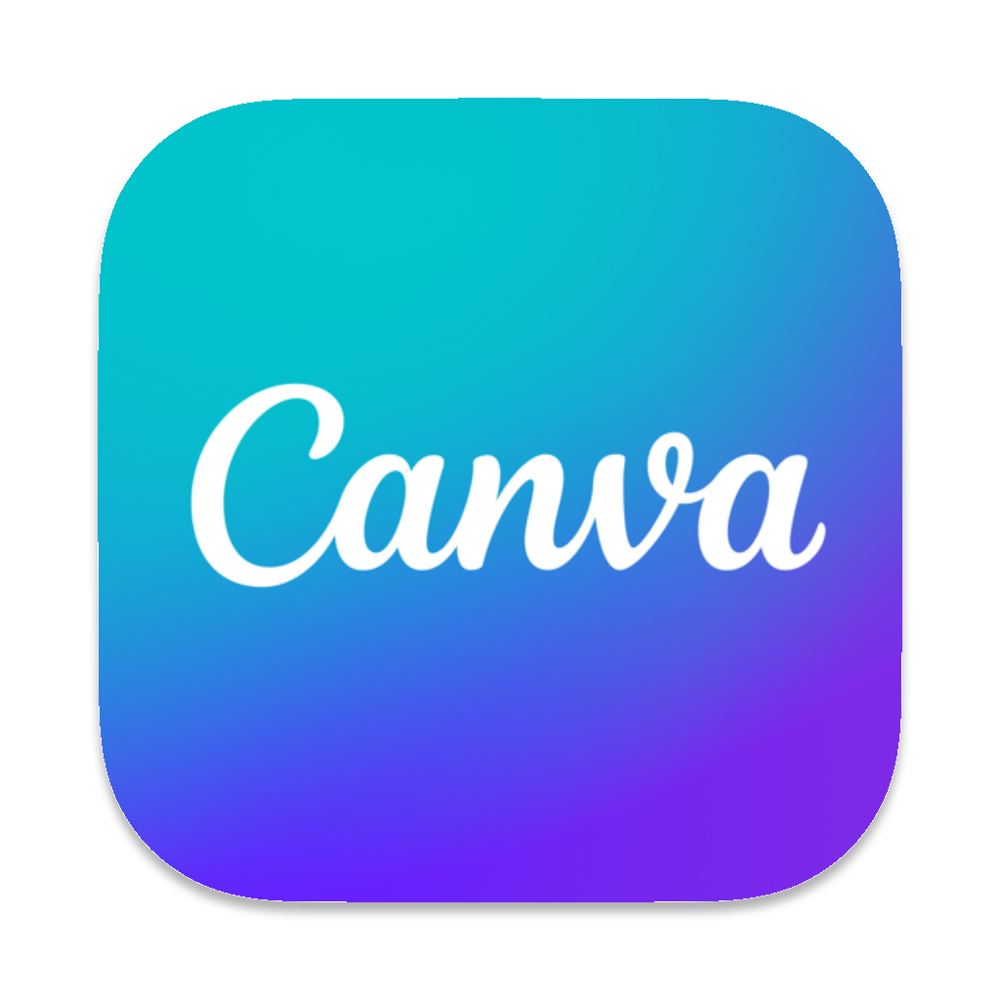

Missions
Analyse :
Identifier les besoins des visiteurs.
Étudier les contraintes du site (environnement, patrimoine, etc.).
Conception :
Créer des supports visuels clairs, esthétiques et durables.
Intégrer des pictogrammes, typographies et panneaux fonctionnels et élégants.
Utiliser des matériaux écoresponsables.
Tests et ajustements :
Valider les maquettes sur le terrain.
Collaborer avec des artisans locaux pour la production finale.
Finalisation :
Déployer une signalétique qui enrichit la visite tout en préservant l’identité du parc.
Compétences mobilisées
- Travail de groupe
- Adaptabilité
- Flexibilité
- Relation client
- Autonomie
- Faciliter la navigation des visiteurs
Outils utilisés
